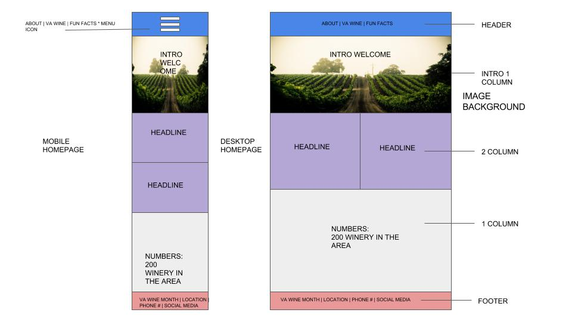
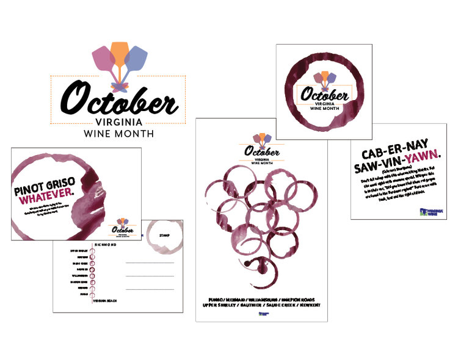

Wireframe

The wireframe was something familar to me ounce I started working with DigitalWave. I realize that it's important to do desktop and mobile since it's different on two platforms. The hierachy is the most importat with big images and big headline.
Moodboards
I had a feeling for my website. This was made from a previous class that was a printed ad campaign. I wanted to use the same sloppy and fun wine feeling.
Production
Project 3: Wine MonthWhat I found easy was placing text and images. The content was the easy to gather, but ounce I started laying out, I found the navigation difficult. I spent the most time in CSS. I also found that trying to break them into two frames would take me longer. I decided to have a one column.
Final Takeaways
What I would do differently is to spend more time working on a two column frame. I would keep the image that had text ontop. The was fun to figure out. I also would keep the navigation flushed to the right. I learned that it's important to map out everything before going in and start coding. Planning is important.